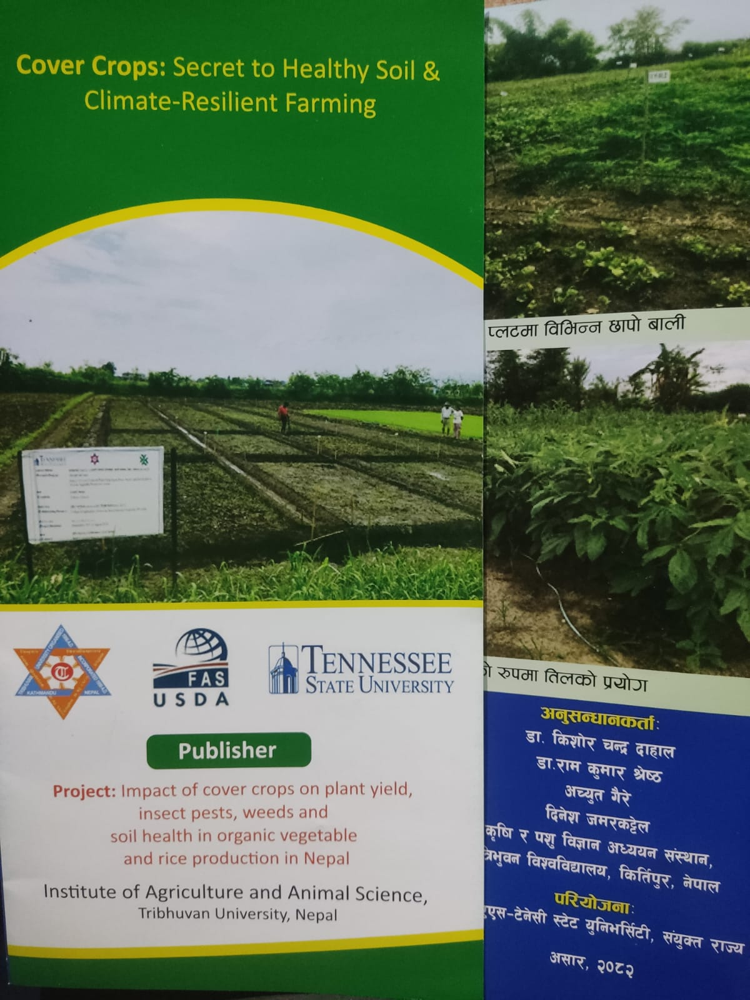
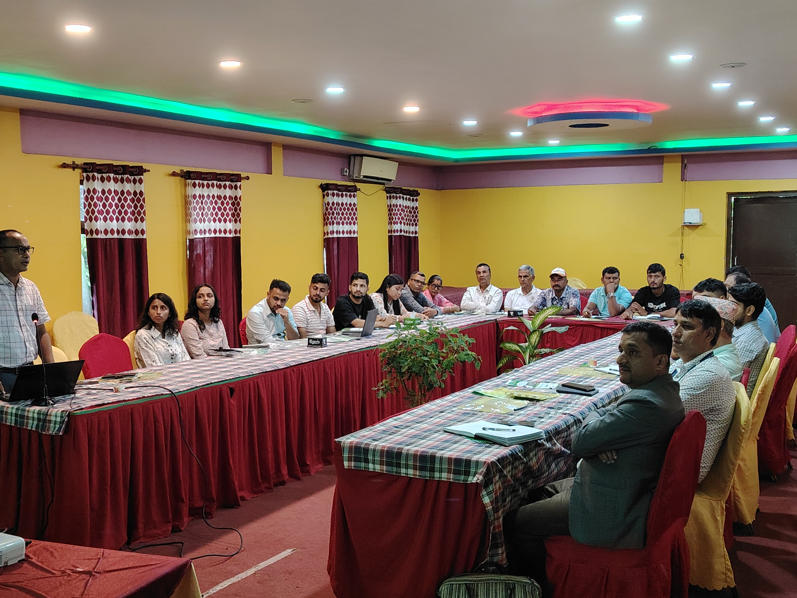
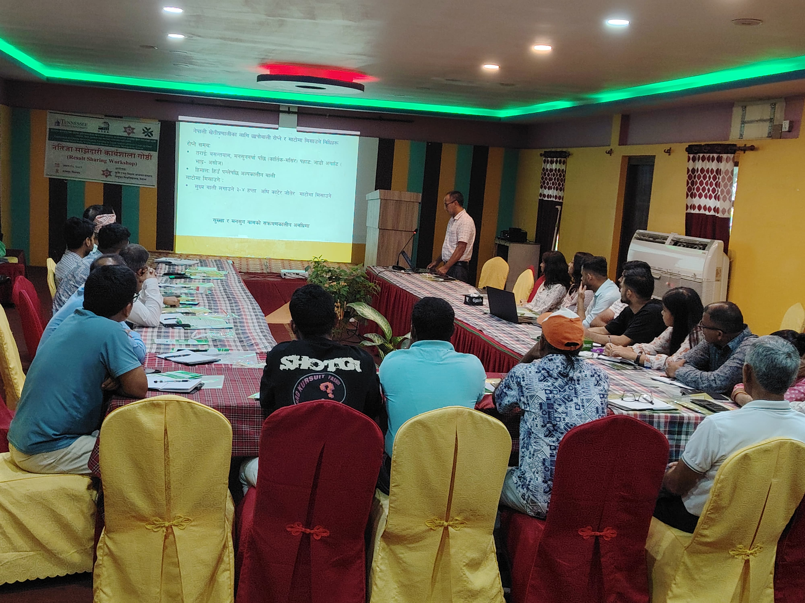
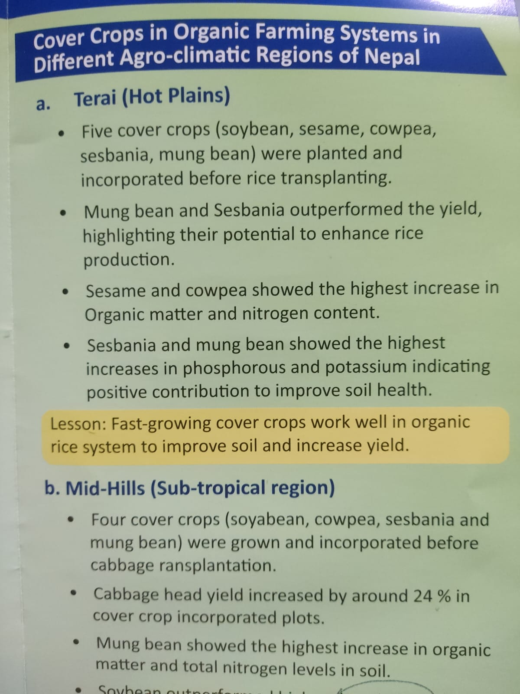
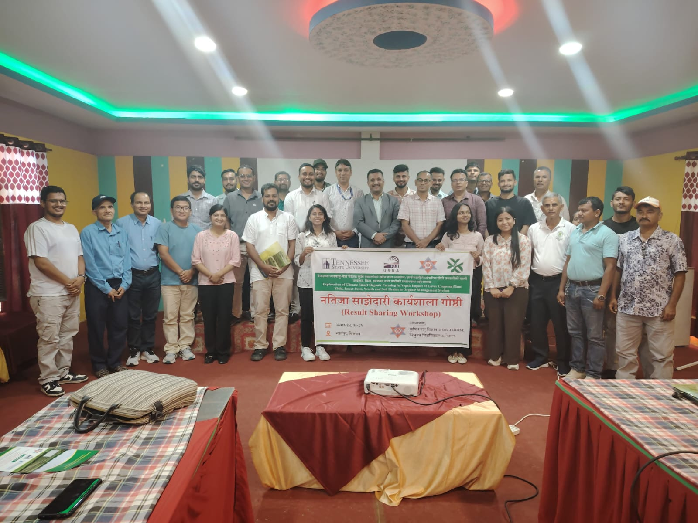

Cover Crops & Soil Health | Tanahu, Nepal
I contributed to the collaborative project titled
“Impact of Cover Crops on Plant Yield, Insect Pests, Weeds, and Soil Health in Organic Vegetable and Rice Production in Nepal.”
I was responsible for agronomic data collection, soil evaluations, growth measurements, and documenting crop performance under different cover crop treatments.
Evaluate the role of cover crops in improving soil fertility and structure
Reduce weed pressure and pest incidence naturally
Enhance crop yield and resilience to heat stress
Promote organic and sustainable production systems in Nepal
Evaluated cover crop impact on cabbage yield and vigor
Recorded soil temperature and monitored nutrient improvement
Growth assessments, sampling & trial record maintenance




